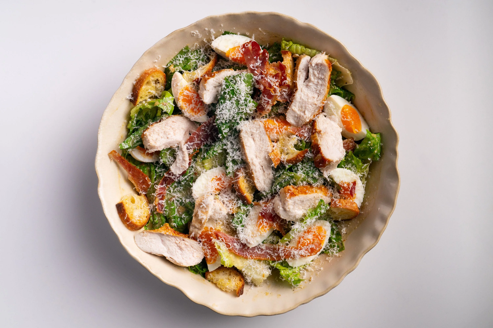

🥗 Ensalada César

🥬 Fresca | 💪 Clásica | ⚡ Casera
⏱️ Tiempo: 25 minutos
Una receta clásica de ensalada César con salsa casera, crutones crujientes y mucho sabor.
🛒 Ingredientes:
- 2 lechugas romanas
- 1 limón
- 2 anchoas
- Pan del día anterior
- 1/2 diente de ajo
- 1 cdta salsa Worcestershire
- 1 cdta mostaza Dijon
- 1 yema de huevo
- 175 ml aceite de oliva
- 50 g queso parmesano
- Sal y pimienta
👨🍳 Preparación:
-
Lava y corta la lechuga romana. Resérvala fresca.
-
Corta el pan en trozos y hornéalo a 180°C durante 10-15 minutos hasta que esté dorado.
-
En un mortero, machaca el ajo con las anchoas hasta formar una pasta.
-
Agrega la yema, mostaza, salsa Worcestershire, jugo de limón y pimienta. Mezcla bien.
-
Añade el aceite poco a poco mientras mezclas hasta lograr una salsa cremosa.
-
Incorpora el queso parmesano rallado.
-
Mezcla la lechuga con la salsa, añade crutones y más queso por encima.
💪 Beneficios:
Rica en vitaminas, con grasas saludables y mucho sabor gracias a su aderezo casero.
⭐ Consejo:
Si quieres una versión más ligera, puedes reducir el aceite o usar yogur natural.